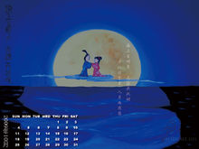

当前位置：首页>神话传说
神话传说
嫦娥奔月远古时候天上有十日同时出现，晒得庄稼枯死，民不聊生，一个名叫后羿的英雄，力大无穷，他同情受苦的百姓，拉开神弓，一气射下九个多太阳，并严令最后一个太阳按时起落，为民造福。后羿妻子名叫嫦娥。后羿除传艺狩猎外，终日和妻子在一起。不少志士慕名前来投师学艺，心术不正的蓬蒙也混了进来。 一天，后羿到昆仑山访友求道，向王母求得一包不死药。据说，服下此药，能即刻升天成仙。然而，后羿舍不得撇下妻子，暂时把不死药交给嫦娥珍藏。嫦娥将药藏进梳妆台的百宝匣。三天后，后羿率众徒外出狩猎，心怀鬼胎的蓬蒙假装生病，没有外出。待后羿率众人走后不久，蓬蒙持剑闯入内宅后院，威逼嫦娥交出不死药。嫦娥知道自己不是蓬蒙的对手，危急之时她转身打开百宝匣，拿出不死药一口吞了下去。嫦娥吞下药，身子立时飘离地面、冲出窗口，向天上飞去。由于嫦娥牵挂着丈夫，便飞落到离人间最近的月亮上成了仙。 傍晚，后羿回到家，侍女们哭诉了白天发生的事。后羿既惊又怒，抽剑去杀恶徒，蓬蒙早已逃走，后羿气得捶胸顿足，悲痛欲绝，仰望着夜空呼唤嫦娥，这时他发现，今天的月亮格外皎洁明亮，而且有个晃动的身影酷似嫦娥。后羿思念妻子，便派人到嫦娥喜爱的后花园里，摆上香案，放上嫦娥平时爱吃的蜜食鲜果，遥祭在月宫里的嫦娥。百姓们闻知嫦娥奔月成仙的消息后，纷纷在月下摆设香案，向善良的嫦娥祈求吉祥平安。从此，中秋节拜月的风俗在民间传开了。
神话传说
- 嫦娥奔月
- 吴刚折桂
- 玉兔捣药---玉兔在捣年糕
- 玄宗故事---“霓裳羽衣曲”
- 月饼起义

白居易
今年八月十五夜，湓浦沙头水馆前。
西北望乡何处是，东南见月几回圆。
昨风一吹无人会，今夜清光似往年。
八月十五日夜湓亭望月
> 【唐】白居易 昔年八月十五夜，曲江池畔杏园边。今年八月十五夜，湓浦沙头水馆前。
西北望乡何处是，东南见月几回圆。
昨风一吹无人会，今夜清光似往年。